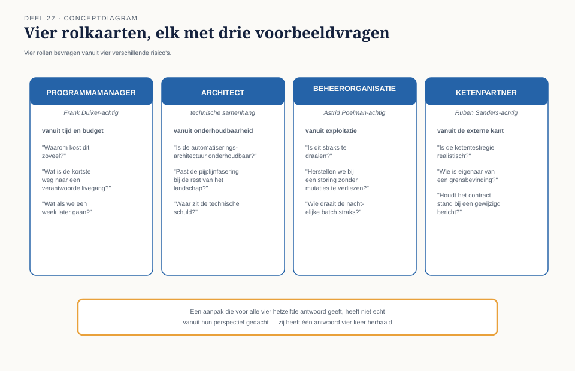

Cursus Testen en Kwaliteitsborging · Niveau 2 (Professional) · Deel 22 van 30
Examentraining en portfolio
Dit is het laatste deel van niveau 2. Een oefenexamen in CTAL-scenariostijl brengt alle elf voorgaande delen samen, gevolgd door een capstone rond een volledige programmarelease: de livegang van het meest risicovolle mutatiekanaal van het hele programma, verdedigd voor vier kritische rollen. Drie doorstroomcriteria sluiten af — een eerlijk beeld van gereedheid voor niveau 3.
6secties
2dagdelen (examen + capstone)
6controlevragen
11instrumenten verdedigd
Positionering. Deze cursus is een voorbereiding op het ISTQB Certified Tester Advanced Level-examen en/of TMAP-certificering (Quality for cross-functional teams), en uitdrukkelijk geen vervanging van het officiële examenmateriaal — de actuele ISTQB Advanced Level-syllabus (istqb.org) en de TMAP-body of knowledge (tmap.net). Alle formuleringen, figuren en werkvormen in dit materiaal zijn van Ductus; studeer voor het examen altijd óók de bron.
Niveau 2: 11 TMAP integraal → 12 Teststrategie op programmaschaal → 13 Testanalyse gevorderd → 14 Kwaliteitskenmerken I → 15 Testdata en testomgevingen → 16 Keten- en integratietesten → 17 Testautomatisering I: ontwerp → 18 Testautomatisering II: in de pijplijn → 19 Niet-functioneel testen → 20 Testen met generatieve AI → 21 Testmanagement → 22 Examentraining + portfolio (hier)
01
Van één systeem naar een release
⏱ 8 min
Niveau 1 eindigde met een capstone rond één deelsysteem. Niveau 2 eindigt met een capstone rond een volledige programmarelease: een geplande livegang van een substantieel deel van het Mutatieplatform, met meerdere teams, een externe ketenpartner, en een stuurgroep die een besluit moet nemen — precies het soort situatie waarin elke les uit dit niveau tegelijk moet samenkomen.
Aan het eind van dit deel kunt u:
de examenstof van niveau 2 (CTAL-scenario's en TMAP) in samenhang toepassen;
een volledig testplan opstellen voor een programmarelease, inclusief productrisicoanalyse op programmaschaal;
een besluitvormend rapport schrijven dat recht doet aan de schaal van een programma;
uw aanpak verdedigen tegen vier verschillende, kritische rollen;
beoordelen of u klaar bent voor niveau 3 aan de hand van drie expliciete doorstroomcriteria.
02
Ochtend: examentraining
⏱ 14 min
Een oefenexamen in CTAL-scenariostijl: langere, situatiegebonden vragen die meerdere concepten tegelijk toetsen, in plaats van korte, geïsoleerde vragen — een opbouw die dichter bij de Advanced-examens (CTAL-TA/TM/TAE) ligt dan bij het CTFL-formaat van niveau 1. Aangevuld met een kort TMAP-herhalingsblok.
Drie strategietips voor scenariovragen:
Lees het hele scenario eerst, zonder naar de vraag te kijken — bouw een beeld van de situatie op, net zoals u bij een echte teststrategiematrix eerst het risicobeeld opbouwt vóór u de diepgang bepaalt.
Let op welke rol aan het woord is in het scenario — het juiste antwoord hangt vaak af van wiens perspectief wordt gevraagd, direct gekoppeld aan de rolgrens-discipline uit heel deze cursus.
Herken welk deel van niveau 2 de vraag raakt — VOICE-elementen door elkaar (deel 11), mutatiescore versus dekking (deel 11), pairwise versus volledige dekking (deel 13), deploy versus release (deel 18), gemiddelde versus percentiel (deel 19).
03
Het proefexamen
⏱ 25 min
Het werkboek bevat het volledige oefenexamen van twintig vragen, verdeeld over zes scenario's die samen alle elf voorgaande delen raken. Hieronder één representatieve vraag per scenario.
Controlevragen
Uit Werkboek deel 22, Deel A — Oefenexamen in CTAL-scenariostijl, representatieve selectie (één vraag per scenario)
1Scenario 1 (deel 12/18/19) — Frank Duiker vraagt om "een percentage" voor een risico-item met status "intensief" op functioneel, compatibiliteit en betrouwbaarheid. Wat is het meest passende antwoord van Iris? A) Een enkel dekkingspercentage, zonder verdere toelichting. B) Status per VOICE-element: welke waarde op het spel staat, wat is vastgesteld, wat niet. C) Weigeren te antwoorden. D) Het gemiddelde van alle risico-items samen.Toon antwoord
Correct antwoord: B — Status per VOICE-element: welke waarde op het spel staat, wat is vastgesteld, wat niet.
2Scenario 2 (deel 15/17) — het portaalteam heeft 340 geautomatiseerde tests. Een test faalt drie van de tien keer zonder duidelijke aanleiding. Wat is de eerste, juiste stap? A) De test direct uitschakelen. B) De oorzaak diagnosticeren: timing, gedeelde testdata, of omgevingsinstabiliteit. C) Opnieuw draaien tot hij slaagt. D) Alle 340 tests herschrijven.Toon antwoord
Correct antwoord: B — De oorzaak diagnosticeren: timing, gedeelde testdata, of omgevingsinstabiliteit.
3Scenario 3 (deel 19) — bij de jaarwerkpiek meet het performanceteam een gemiddelde responstijd van 1,1 seconden. Wat ontbreekt in deze rapportage? A) Niets, het gemiddelde is voldoende. B) Het 95e-percentiel, dat de ervaring van de gebruikers met de traagste responstijden onthult. C) De naam van de tester. D) Het aantal testgevallen.Toon antwoord
Correct antwoord: B — Het 95e-percentiel, dat de ervaring van de gebruikers met de traagste responstijden onthult.
4Scenario 4 (deel 20) — een taalmodel genereert 25 testgevallen; vijf ervan testen gedrag dat nergens in het acceptatiecriterium staat. Waarom is "de AI vragen of het resultaat correct is" geen betrouwbare verificatie? A) AI geeft nooit antwoord. B) Het model heeft geen onafhankelijke toegang tot de waarheid over het systeem — het orakelprobleem wordt verplaatst, niet opgelost. C) AI is altijd correct. D) Verificatie is nooit nodig.Toon antwoord
Correct antwoord: B — Het model heeft geen onafhankelijke toegang tot de waarheid over het systeem — het orakelprobleem wordt verplaatst, niet opgelost.
5Scenario 5 (deel 16) — Jelle Bakker en Ruben Sanders verzekeren Frank Duiker onafhankelijk van elkaar: "dat is bij ons getest", over dezelfde koppeling. Welke bevinding uit niveau 1 herhaalt zich hier structureel? A) T3. B) T7. C) T4. D) T1.Toon antwoord
Correct antwoord: B — T7. Beide partijen kunnen gelijk hebben en samen toch ongelijk — precies het patroon uit T7, nu op ketenschaal.
6Scenario 6 (deel 21) — Iris geeft Frank Duiker een schatting voor het testwerk van de volgende increment. Een van de aannames (stabiele testbasis) blijkt tijdens de increment niet te kloppen. Wat is de juiste reactie? A) Doorgaan alsof er niets is gebeurd. B) De schatting herijken, gekoppeld aan de aanname die niet uitkwam. C) Iris verwijten dat de schatting fout was. D) Nooit meer schatten.Toon antwoord
Correct antwoord: B — De schatting herijken, gekoppeld aan de aanname die niet uitkwam.
04
Middag: de capstone
⏱ 20 min
U krijgt een release toegewezen: de livegang van het volledige mutatiekanaal voor terugwerkende-krachtwijzigingen, het meest risicovolle onderdeel van het hele programma — het raakt vier van de vijf teams, de externe partij Vestara, en combineert vrijwel elk thema uit niveau 2: datumgrenzen (deel 13), ketenoverdracht (deel 16), performance tijdens de jaarwerkpiek (deel 19), en een programmabrede beslissing over wat bewust niet wordt getest (deel 12).
Uw taak, individueel voor te bereiden en in een groep van drie of vier te verdedigen: een volledig testplan (maximaal drie A4) met een productrisicoanalyse op programmaschaal, de gekozen automatiseringsvorm en pijplijnfasering, de testdata- en omgevingsopzet inclusief servicevirtualisatie richting Vestara, de ketentestregie, en risicogebaseerde entry-/exitcriteria; een besluitvormend rapport (maximaal anderhalf A4), VOICE-gekoppeld, per risico-item; en een korte reflectie (een halve A4) op wat u, terugkijkend op WGP 2.0, bewust anders zou hebben gedaan.
Elke groep verdedigt zijn aanpak in vijfentwintig minuten voor vier rollen: de programmamanager (Frank Duiker-achtig), die bevraagt vanuit tijd en budget; de architect, die bevraagt vanuit technische samenhang; de beheerorganisatie, die bevraagt vanuit exploitatie; en de ketenpartner (Ruben Sanders-achtig), die bevraagt vanuit de externe kant.

Figuur 22-1 — Vier rolkaarten met, per rol, drie voorbeeldvragen die de rol waarschijnlijk zal stellen.
Kernzin
Vier rollen bevragen vanuit vier verschillende risico's. Een aanpak die voor alle vier hetzelfde antwoord geeft, heeft niet echt vanuit hun perspectief gedacht — zij heeft alleen één antwoord vier keer herhaald.
Wat wordt beoordeeld: of elke keuze verdedigbaar is vanuit risico, niet vanuit gewoonte of vaste sjablonen; of de vier rollen elk een antwoord krijgen dat hun perspectief serieus neemt; of het besluitvormend rapport standhoudt tegen de vraag "geeft dit Frank Duiker een eerlijker antwoord dan een percentage?"; en of de reflectie een echte, specifieke verbinding legt met WGP 2.0.
05
Doorstroomcriteria naar niveau 3
⏱ 10 min
Niveau 3 behandelt testen onder toezicht: bewijsbaarheid, auditeerbaarheid en de Stelselovergang — een omgeving met wettelijke eisen aan herleidbaarheid die niveau 2 al aanstipte (deel 20) maar niet volledig uitwerkte. Drie criteria geven een eerlijk beeld of u daarvoor klaar bent:
U kunt een teststrategiematrix zelfstandig opstellen en verdedigen voor een casus die u niet eerder heeft gezien, niet alleen toepassen op een bekende casus.
U herkent, zonder hulp, wanneer een besluit buiten uw eigen mandaat valt — het onderscheid tussen adviseren en besluiten blijft onder toezicht nog scherper dan hier.
U kunt herleidbaarheid van uw eigen testwerk aantonen — niet alleen beweren dat iets getest is, maar laten zien waaruit dat blijkt, inclusief AI-ondersteund werk (deel 20).
Wie deze drie criteria bij zichzelf herkent na de capstone, is klaar voor niveau 3. Wie twijfelt bij één ervan, kan gericht daaraan werken vóórdat niveau 3 begint — dat is geen falen maar precies het soort eerlijke zelfinschatting die de hele cursus voorstaat.
06
Terug naar niveau 2 als geheel
⏱ 8 min
Niveau 2 begon met TMAP en het VOICE-model als antwoord op Frank Duikers vraag om "een percentage" (deel 11). Elf delen en elf instrumenten later is het antwoord op die vraag niet "een percentage bestaat niet" maar een concrete, navolgbare manier om waarde, risico en programmaschaal in samenhang te rapporteren — waar niveau 1 dat nog aan één systeem kon overlaten.
TMAP-lens
Voor deze capstone geen apart TMAP-blok — in plaats daarvan een expliciete vraag die in de verdediging aan bod mag komen: zou u deze release liever als klassiek programmatestplan-document formuleren, of als een levend geheel van VOICE, teststrategiematrix en bouwstenen dat het programma blijft bijwerken? Beide zijn verdedigbaar, mits beargumenteerd vanuit de context.
Wie hier slaagt, heeft niveau 2 volledig doorlopen: van VOICE tot een verdedigbare, risicogebaseerde aanpak op programmaschaal, inclusief ketens, automatisering en AI-ondersteuning. De discipline die hier is geoefend — risico eerst, eerlijkheid over wat u niet weet, en de rolgrens tussen adviseren en besluiten — blijft het fundament voor wat volgt.
Verder naar niveau 3
Niveau 2 sloot af met een programma dat leerde zijn eigen waarde, risico en voortgang eerlijk te verantwoorden — van Frank Duikers vraag om "een percentage" tot een besluitvormend rapport dat er recht aan doet. Niveau 3 verlegt het decor naar de Stelselovergang: de Wtp-transitie, met 1 januari 2028 als harde deadline, en een eenmalige, grotendeels onomkeerbare berekening waarbij bewijsbaarheid niet wenselijk maar wettelijk vereist is. Vanaf hier is de cursus ISTQB-only — TMAP kent geen expertniveau.